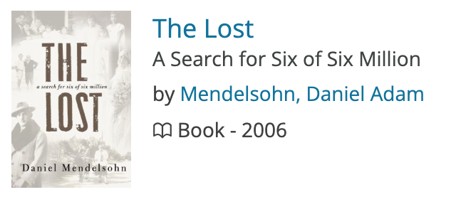
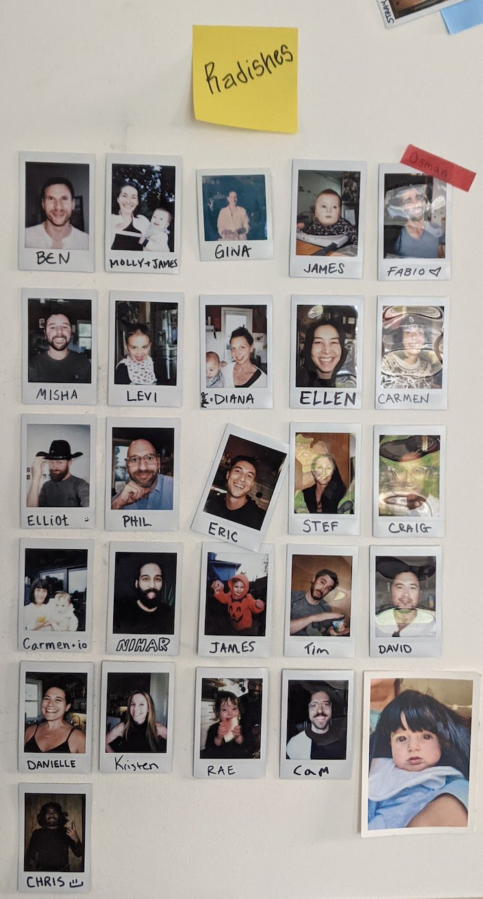

Favorite things of 2024
January 16, 2025
My sister Alex wrote a great article on her 18 favorite things of 2024 and for Tunie's birthday we're all doing the same.
So here's some of my favorite things of 2024
Best purchase of 2024
New bike!
I try to avoid turning my life into a long string of purchasing decisions, but there are some things that I really am glad I have. You're never too old for toys, and the older I get the more I'm interested in those things that achieve the holy trinity of utility, beauty, and sustainability. This gravel bike is nestled right in there. It's a speed demon and I even put a trash can on it, which is only a two-thirds trinity item if you're keeping score at home.
Article I'm always paraphrasing
The Canadian way of death - the nation legalized assisted suicide and exposed the limits of liberalism by David Brooks
I sometimes take notes when I read so I can whip out facts and quotes at parties, like that The American Association of Railroads reports that one train can move a metric ton of materials 500 miles on a single gallon of fuel. Anyways, this David Brooks article produced some notes I keep coming back to, like this paraphrase:
Perhaps life is defined not by the options available to us but by the strength of our commitments.
I'm sure you've felt emptiness in your life even at those moments when you seem to have the utmost choices. Maybe you spent all year waiting for summer break but when it came you were somehow bored. I know I've been there. Brook's statement hit on a reason I love living in a place where I'm relied upon and cherished for helping out and hanging out around the house. When I'm gone, people miss me, and I think they appreciate what I bring when I'm here. Makes me feel like I belong.
Maybe I should do a whole book report on that article, because I think about it a lot. The "strength of your commitments" life philosophy offers a way off the vexing hedonic treadmill. For now, it's comforting trying to commit to things I care about and not worry if I'm not doing the coolest things with the coolest people.
The Oscar for best Ken Burns film of the year goes to...
Ken Burns! for Leonardo Da Vinci
The American Buffalo was quite good, but I loved hearing about Da Vinci. I read the Walter Isaacson Da Vinci biography, but film is a better medium for diving into the splendor of Da Vinci's art and imagination.
At first blush, Da Vinci seems like he would be a pain to be around because he was always working. It seems like he never let himself rest. But his contemporaries say he was a delight - as funny and musical as he was scientific and exacting. What a nice balance!
I was inspired by his passion for observation and sketching. He said to sketch something accurately you must truly see what is there. There are no lines in nature, Leonardo said, only overlapping shadows.
When we went to the aquarium this past weekend, I tried to sketch crabs and corals. It was fun! And got me in touch with the patient observation and reverance of the great master.
A Pretty Good Book
I don't finish a lot of books, but I've been getting a little into etymology and geneology this year. I saw Daniel Mendelsohn as one of the talking heads in another Ken Burns film, The U.S. and the Holocaust, and he basically goes on a decades long journey to find out what happened to his great uncle's family in the Holocaust. It's a race against time to talk to the 30 remaining Jews from Bolechow, Poland before they pass on.
BTW, the message from the Ken Burns doc was basically that the reason so many Jews did not emigrate out of the path of the Nazis was that other countries refused to take them. Prescient considering today's immigration landscape.
Favorite Event
Dave Matthews Band Tour Bus Incident Re-enactment
If you've ever been on the Chicago architecture boat tour you have stood in the shoes of unfortunate tourists who were unhygenically sprayed, soaked and soiled by 800 pounds of waste from a DMB tour bus septic tank in 2004.
To commemorate the occaision I decided we needed to re-enact. So we gathered a bunch of people in the back yard for a sort of trolley problem (to dump or not to dump?) decision for that tour bus driver. Then we had a concert where the Radish band played DMB covers. It was peak summertime yard enjoyment.
One of my favorite things about Radish is that it's easy to host events for the housemates. There's a crew of 40 people who live here or used to, and if you get 10 of them together everyone else wants to be there too. It almost doesn't matter what the event is. And since we know each other well there's just all kinds of laughs and hijinks that we can get up to.
Here's the current Radishes
Favorite quick art project
Tahoma-Mt. Ranier mural at Corbin's house
Corbin made this line drawing of the mountain using some AI magic and we projected it on the shed and painted the lines. Fun!
Life hacks
Here's some little things that make my life a little better.
-
Voice notes
Some people have stage fright with these, but I don't mind winging it and telling people what's on my mind. It's Like a phone call but you don't have to answer at a particular time. More nuance than a text. Easier than typing. I love em. -
Hang drying clothes
I just like the simple idea that if you're patient, the clothes dry themselves. Scratchy towels is my main complaint here. I found a HomesteadingToday.com thread on de-scratchifying, but it's mostly just a bunch of people being like "I love scratchy towels!" so F me I guess. Though, machine drying them for a few minutes does seem to work. I think you need heat to shake up those fibers. -
Crocs
I resisted, but eventually aquiesced to the croc after finding a lightly used lavender pair abandoned in the house. Socks or no soccks, wet or dry. They're light, cushy, flexible, ugly. You really can have it all.
Update: Jan.27th, 2024 - found out at dinner tonight that Radish Gina has been wondering where her lavender crocs have been for the last year and a half. -
Nighttime phone lock
After having a phone/computer for 20 years, 2024 was the year I finally realized that I basically need parental controls for myself after 11pm. As Frieda and I like to say, that's when the Oreo Brain takes over. It's a nocturnal, reptillian persona that comes out juust before bed time to gorge itself on Doritos and Instagram reels. No matter how many times I promise myself not to have another late night internet bender, I always forget that agreements made in the light of day are pacts with the Quinoa Salad Brain, not old Oreo Brain.
Thankfully some of our society's maturing attitudes about phone use have led Apple and Android to enable features that let us monitor and limit screen time. You can check how long you spend on your phone every day, how many times you unlock, and more in the settings.
My friends Micah and Andrew set screen time limits and give the other person the password. They could ask for the password anytime but of course they can't stomach the embarassment of asking. This works pretty well for me too.
Soap box: It bothers me that it's 2024 and we are only just starting to develop a cultural vocabulary around healthy phone use. Now AI's here. Will it take us 20 years to start to have an understanding of AI's effect on us, our kids, our institutions?
Quiz: How many hours a day does the average American spend on their phone?
Each day Americans spend 4 hours and 30 minutes on their mobile phones and check their phone 144 times per day. I just completed an entire day of almost continuous phone and computer use myself. Woke up, checked phone, looked at work computer all day, came home and watched movie, wrote this on computer. Maybe I should go be a farmer and just try that out. -
Open source software
As a bay-area-minimalist-commune guy it's a little on the nose to be into open source software, but sometimes you just have to lean in. I guess simplicity, anti-consumption and collaboration drive a lot of my interests.
Anyway, as it turns out, there's a global community of do-ers who actively maintain free versions of most tools and collections that people pay for on the internet. Wikipedia is the best example of this. It's written by everyday people and is way better than any traditional encyclopedia. All for free. Bonkers. I still do not know how it's as accurate as it is. I think it speaks to how well meaning most people are. The internet is supposed to be the domain of trolls and mean comments, but in this anonymous encyclopedia people are accurate and helpful. Maybe editing wikis is just so boring it doesn't attract many trolls.
But there's open source Photoshop, Microsoft Office, video editing, messaging and more. Most are worse than the paid versions but quite servicable. The one i got into most in 2024 was Gimp, the open source photoshop, where I made some stickers and t shirts for my friends Ellen and Nihar's wedding. Anders modeling one of our bespoke threads